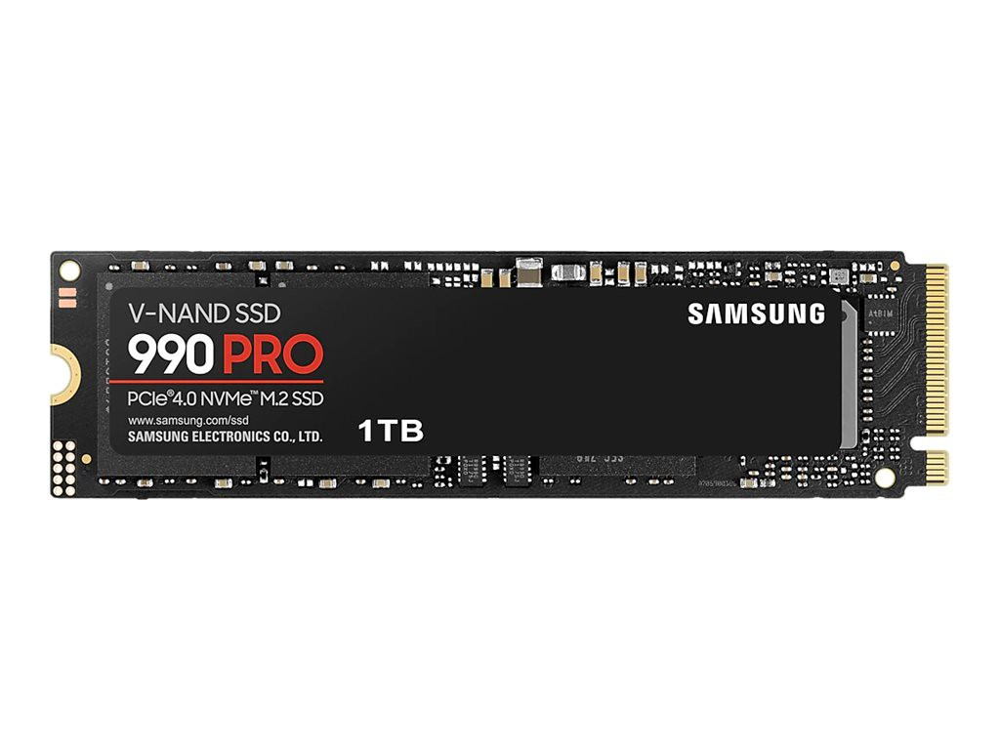

Mens RAM er datamaskinens kortsiktige minne, er lagringsdisken langtidshukommelsen. Det er her alt du eier og har blir lagret permanent. Operativsystemet ditt, spillene, bildene, og programmer som videoredigering eller tekstbehandling bor alle her inne. Når du slår av strømmen, ligger filene trygt og venter på deg til neste gang du slår på maskinen.
I dataverdenen snakker vi hovedsakelig om to forskjellige typer lagring. Den eldste typen heter HDD eller harddisk. Den har fysiske, spinnende metallplater inni seg og en liten arm som leser data, nesten som en platespiller. Fordelen med en HDD er at den er veldig billig hvis du trenger enormt med plass til å lagre gigantiske mengder videofiler. Ulempen er at den er ganske treg og bråker litt.
Den moderne standarden er nemlig SSD. Denne typen disk har ingen bevegelige deler i det hele tatt, og er bygget av minnebrikker som minner om det du finner i telefonen din. Forskjellen i hastighet mellom disse to er helt utrolig.
Hvis du noen gang setter deg ned for å teste og sammenligne nøyaktig hvor raskt operativsystemet starter opp, eller hvor lang tid det tar å åpne store programmer på en SSD i forhold til en HDD, vil du se at SSD-en knuser den gamle teknologien totalt. Maskinen går fra å bruke minutter på å starte opp, til å være klar på noen få sekunder. Forskjellen er som natt og dag.
På grunn av denne ekstreme hastigheten er en SSD det aller viktigste du kan ha for at hele datamaskinen skal føles kvikk og moderne. De fleste i dag velger en rask SSD til Windows og de programmene de bruker aller mest, og kanskje de setter inn en billig HDD ved siden av utelukkende for å samle på store filer som ikke trenger å lastes inn lynraskt.

^ Eksempel bilde ^
kilder: Wikipedia